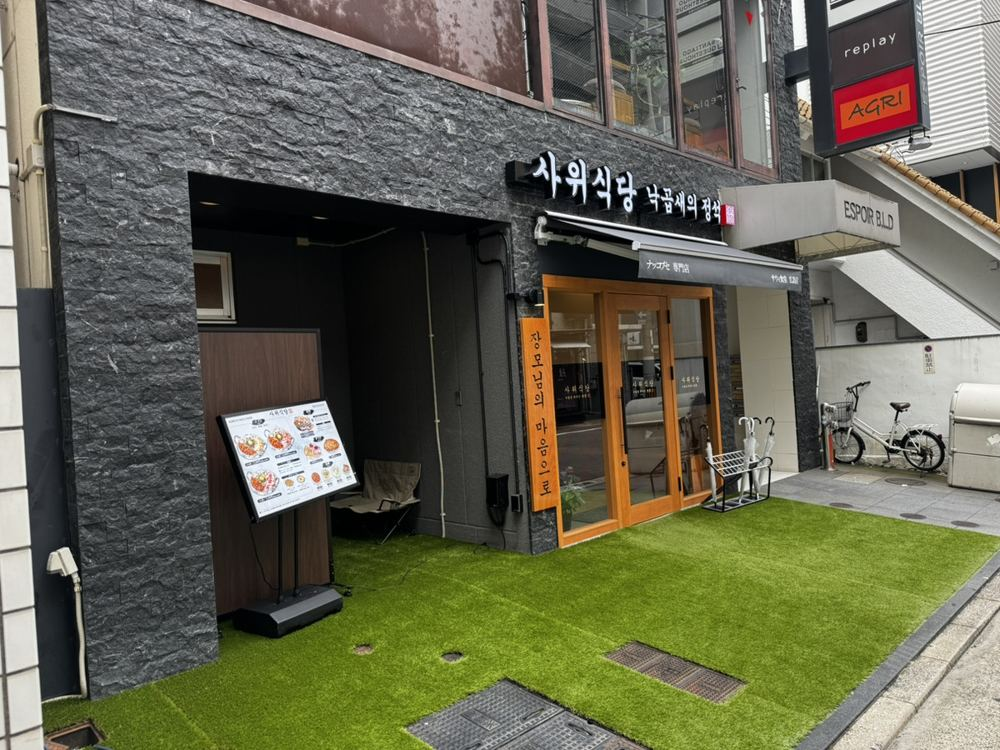
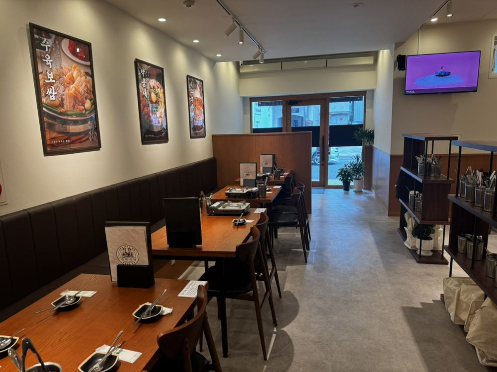
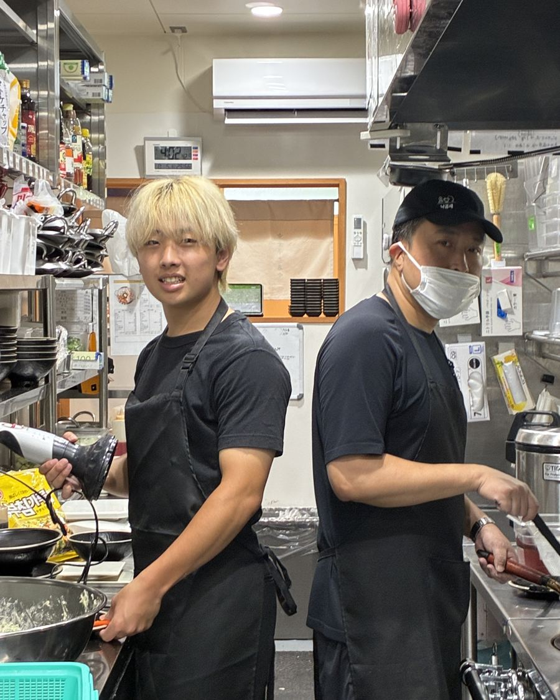
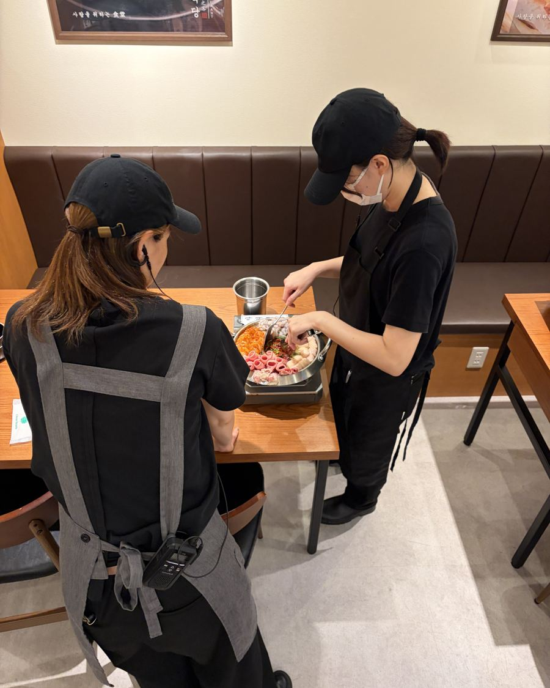
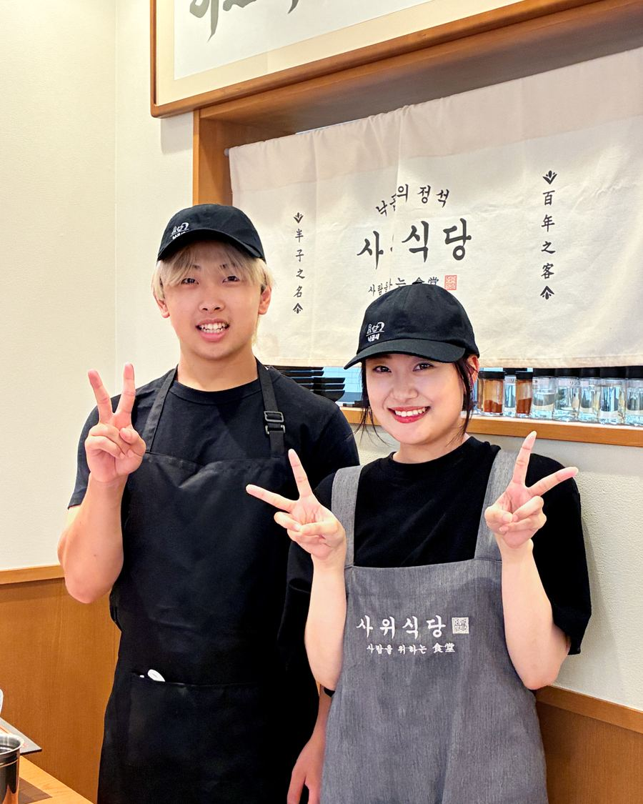

前職の給与を考慮して決定
面談で前職の給与をお聞きし、それを踏まえて金額をご提示します。
年間休日100日以上・週休2日制
シフト制で月8日以上休めます。有給休暇・慶弔休暇もあります。
広電「本通」「袋町」電停すぐ
袋町公園のそば。電車・バス・自転車・バイクで通えます。
新大久保で行列の本店、
中国地方初出店のお店です
ナッコプセは、タコ（ナクチ）・ホルモン（コプチャン）・エビ（セウ）を甘辛いスープで煮込む韓国・釜山の鍋料理です。サウィ食堂は東京・新大久保の本店が連日行列になる人気店で、2026年5月に広島店をオープンしました。
スタッフは学生からベテランまで約30名。韓国出身のスタッフも働いています。オープンしたばかりのお店なので、人間関係のしがらみがなく、フラットに協力し合える職場です。


テレビ・メディアで紹介されています
- 広島ホームテレビ「ピタニュー」【ググッと。瀬戸内】残暑を乗り切る2026年9月4日放送
- RCC「イマナマ！」新店ラッシュ！中町エリアを知りたガール2026年8月17日放送
- TSSテレビ新広島「ひろしま満点ママ!!」街ナカ!トレンどっち!? #142026年6月30日
- RCC「イマナマ！」サウィ食堂 広島店が紹介されました2026年5月28日
- おとなの週末Web新大久保・大阪で人気、釜山発祥の旨辛鍋ナッコプセ専門店が初出店2026年5月5日
キッチン・ホールの
お店まわり全般


- 接客・調理経験に合わせて持ち場を決めるので、得意なことから始められます。
- 売上管理・仕入れお店に慣れてきたら、段階的にお任せします。
- スタッフ育成希望や適性に応じて、アルバイトスタッフの教育もお願いします。
- 店舗オリジナルメニューの開発広島店だけのメニューづくりに関われるチャンスもあります。
フランチャイズなのでレシピとマニュアルが整っており、食材カットの機械も入れています。お店のやり方に慣れるまでの時間は短く、そのぶん、これまでの接客や調理の経験をすぐに発揮していただけます。
店長をめざしたい方には、店舗運営からマネジメントまで任せる道もあります。
9:00〜23:00の間で
シフトを組みます
※シフトの一例です。
残業代は1分単位で全額支給されるので、「しっかり稼ぎたい」「プライベートを大事にしたい」など、生活に合わせて働き方を選べます。
働く条件
- 職種
- キッチン・ホールスタッフ（将来の店長・コアメンバー候補）
- 雇用形態
- 正社員
- 給与
- 月給270,000円〜500,000円前職の給与を考慮して決定／試用期間3ヶ月（月給25万円〜、習熟度により1ヶ月から短縮あり）／残業代は1分単位で全額別途支給
- 昇給・賞与
- 昇給随時／賞与年1回（業績による）
- 勤務時間
- 9:00〜23:00の間でシフト制シフト例：9:00〜16:00（休憩1時間）／16:00〜23:00（休憩1時間）／9:00〜21:00（休憩2時間）／9:00〜23:00（休憩2時間）。※シフトの一例です。22時以降の勤務は18歳以上の方のみ。
- 休日・休暇
- 年間休日100日以上／週休2日制（月8日以上）有給休暇・慶弔休暇
- 応募資格
- 飲食店での勤務経験を活かしたい方ブランクのある方も歓迎します
- 勤務地
- サウィ食堂 広島店広島県広島市中区中町4番18号 中町エスポアールビル1階／広電「本通」「袋町」電停より徒歩すぐ
- 待遇
- 社会保険完備（雇用・労災・健康・厚生年金）／交通費支給（社内規定あり）／残業手当・深夜手当／まかないあり（食事補助）／制服貸与／髪型・髪色自由（清潔感があればOK）
- 社宅
- 遠方から入社される方向けに社宅あり自己負担3万円
- 運営会社
- San Roots株式会社代表取締役 小畠 諒／本社 広島県三原市城町1丁目12番5号／株式会社エムセックのグループ企業
LINEだけで
面談まで進めます
- 1
LINEで友だち追加
下のボタンからサウィ食堂 広島店のLINEを追加します。
- 2
お名前と希望日を送る
自動で届くメッセージに沿って、お名前・ご経験・面談の希望日を送ってください。
- 3
面談（1〜2回）
サウィ食堂 広島店で行います。前職の給与もこのときにお聞きします。
- 4
内定・入社日の相談
給与をご提示し、入社日を相談して決めます。
応募の前に
今の職場に在籍したまま応募できますか？
できます。面談の日程や入社日は、今のお仕事の都合に合わせて相談できます。
「前職給与以上」はどうやって決まりますか？
面談で前職の給与をお聞きし、それを踏まえて金額をご提示します。
まずは話だけ聞いてみてもいいですか？
大丈夫です。LINEで「話を聞きたい」とだけ送っていただければ、お店のことをご説明します。
韓国料理の経験がなくても大丈夫ですか？
大丈夫です。レシピとマニュアルがあるので、飲食の経験があればすぐに慣れていただけます。
まずはLINEで
お気軽にご連絡ください

履歴書は面談のときで大丈夫です。友だち追加後、お名前を送っていただくと担当者からご連絡します。
LINEで応募するサウィ食堂 広島店の公式LINEが開きます。